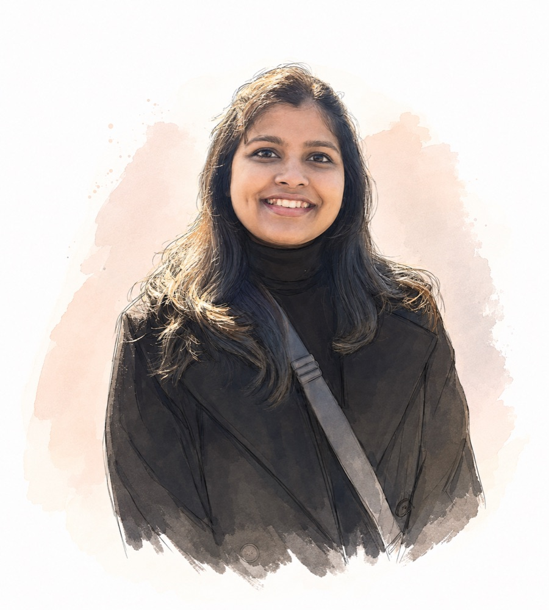

Open to Lead / Senior UX roles
Shilpa
Rajak
Senior UX Designer crafting game experiences for hybrid-casual & word games played by 10 million+ people.

I hold a B.Tech in Electronics & Communication Engineering from NIT Durgapur — a background that taught me to think systematically and solve problems with precision.
But growing up, I was always drawn to art, sketching and painting. That creative pull eventually moved me from engineering into design, and I've never looked back.
My gaming journey started with countless hours of Counter-Strike, Call of Duty, PUBG and competitive board-game weekends — not knowing it would one day become a full-time career in game experience design.
Since then it's been an exciting run: designing games, crafting player experiences, and listening to the stories players bring along the way.
Selected work
Complex problems, solved through simple, human-centered design.
Today's Top Picks — Crossword
A research-led personalised puzzle section that lifted completion across a 10M+ player base.

Word Trip — IAP System Design
End-to-end redesign of the in-app store — rethinking merchandising, hierarchy and the purchase flow to make value clear at the moment of intent. Later ported across multiple word-game titles.
Daily / Weekly Collectibles
Built a modular, reusable engagement framework for collectibles — a system of components and animation patterns teams could recombine for any daily or weekly event.
Hexa Tap Away
Led end-to-end UI/UX direction for PlaySimple's first hybrid-casual game — owning the full player interface and gameplay-system UX from scratch. Full case study on the way.
Journey
First design role — B2B
Began my career as a junior UX designer, discovering the intersection of art and problem-solving.
Joined PlaySimple Games
Came on as Associate UX Designer — crafting intuitive experiences for mobile word games.
Managing & leading multiple games
Led UX design for 4 key in-app-purchase features, driving monetisation and player delight.
Leading multiple genres & building team
Growing into a systems thinker — leading design decisions across the full product lifecycle.
Skills & tools
What I bring to the table
Research —
Discovery, User Research, User Interviews, Competitive Benchmarking, Funnel Analysis, UX Metrics Analysis, Usability Testing, Journey Mapping.Design & Craft —
Wireframes, Flows Diagram, Interactive Prototyping, UI Design, Visual Design, Hi-Fi Mockups, Design Systems, Motion Design.Domain —
Game UX, IAP Flows, Monetisation UX, Systems Thinking.Tools —
Frameworks
Systems I've built that outlast a single screen.
Interruption Analysis
A non-interruptive UX framework optimising pop-up frequency and cooldown intervals across live games — reducing player drop-off by 1.5%.
AI UX Pipeline
Spearheaded AI-tooling adoption across the design org — integrating generative AI into documentation, ideation and prototyping workflows.
Player Archetypes
A scalable player-research framework adopted org-wide, capturing qualitative insights that informed strategic roadmaps for 3+ live titles.
Life outside Figma
What keeps the creative instincts sharp.
Illustration
Creating art is where my design journey began. I still illustrate to explore ideas and keep my instincts sharp.
Travel & Food
Exploring new cultures fuels my empathy as a designer — every place teaches me how people interact with the world.
@taste_travel_canvasBoard Games
Weekends are for board games — favourites include Everdell, Creature Comforts, Viticulture and Flamecraft.
Baking & Cooking
Food knows no boundaries — experimenting in the kitchen is my way of exploring culture and creativity.
Contact
Let's play and create more amazing games together.
I'm currently open to Lead / Senior UX design opportunities.
© 2026 Shilpa Rajak · Senior UX Designer, PlaySimple Games · Designed & built with Claude · View previous design